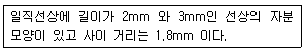

자기비파괴검사기능사 (2016-07-10 기출문제)
1과목: 자기탐상시험법
1. 액체가 고체표면을 적시는 능력을 무엇이라고 하는가?
- 밀도
- 적심성
- 점성
- 표면장력
(정답률: 91%)

2. 고압용기, 석유탱크 등의 정기적 보수검사에서 유해한 결함 중의 하나인 표면균열의 검출에 가장 적합한 비파괴검사법은?
- 초음파검사
- 누설검사
- 침투탐상검사
- 음향방출검사
(정답률: 72%)
3. X선과 물질의 상호작용이 아닌 것은?
- 광전효과
- 카이져효과
- 톰슨산란
- 콤프톤산란
(정답률: 74%)
4. 다음 중 누설검사법에 해당되지 않는 것은?
- 가압법
- 감압법
- 수직법
- 진공법
(정답률: 75%)
5. 적외선 써모그래피로 얻어진 영상을 무엇이라 하는가?
- 토모그래피
- 홀로그래피
- C-스코우프
- 열화상
(정답률: 78%)
6. 강재 내에서 굴절된 종파가 90도 로 외어 전부 반사하려면 아크릴 수지에서의 입사각이 몇도 이여야 하는가? (단, 아크릴 수지 내에서 종파속도는 2730m/s, 강재내에서 종파속도는 5900m/s 이다.)
- 약 23.6도
- 약 27.6도
- 약 62.4도
- 약 66.4도
(정답률: 69%)
7. 방사성동위원소 중 중성자투과 검사에 주로 사용되는 원소는?
- 252Cf
- 96Pb
- 235U
- 147Cs
(정답률: 56%)
8. 표면으로부터 표준침투깊이의 시험체 내면에서의 와전류밀도는 시험체 표면 와전류 밀도의 몇%인가?
- 5%
- 17%
- 27%
- 37%
(정답률: 48%)
9. 누설검사에 대한 설명 중 틀린 것은?
- 외부에서 기밀장치로 다른 유체가 유입되는 것을 누설이라고 한다.
- 누설검사 중 누설의 유무, 누설위치 및 누설량을 검출 하는 것을 특히 '누설검지방법' 이라고 한다.
- 방치법 시험체를 가압하거나 감압하면서 일정시간 경과 후 압력변화를 계측해서 누설을 검지하는 방법이다.
- 기초누설검사는 간단하고 검출감도가 비교적 양호하지만, 발포에 영향을 주는 표면의 유분이나 오염의 제거 등 전처리가 중요하다.
(정답률: 51%)
10. 시험체의 양면이 서로 평행해야만 최대의 효과를 얻을 수 있는 비파괴 검사법은?
- 방사선투과시험의 형광투시법
- 자분탐상시험의 선형자화법
- 초음파탐상시험의 공진법
- 침투참상시험의 수세성 형광침투법
(정답률: 65%)
11. 원리가 다른 시험방법으로 조합된 것은?
- RT, CT : 방사선의 원리
- MT, ET : 전자기의 원리
- AE, LT : 음향의 원리
- VT, PT : 광학 및 색채학의 원리
(정답률: 69%)
12. 항공기 터빈블레이드의 균열검사에 적용할 수 있는 와전류 탐상코일은 무엇인가?
- 표면형 코일
- 내삽형 코일
- 회전형코일
- 관통형코일
(정답률: 57%)
13. 방사선투과검사를 하는 10m 거리에서 선량률이 80mR/hr 였다면 40m 거리에서의 선량율(mR/hr) 은 얼마인가?
- 5
- 7.5
- 10
- 20
(정답률: 51%)
14. 자분탐상시험에서 결함의 검출에 영향을 미치는 인자가 아닌 것은?
- 시험면의 거칠기
- 자화
- 검사 시기
- 자분의 적용
(정답률: 77%)
15. 형광습식법에 의한 연속법의 자분탐상검사 공정을 바르게 나타낸 것은?
- 전처리→자화→자분적용→자화적용→관찰
- 전처리→자분적용→자화→자화종료→관찰
- 전처리→자화→자화종료→자분적용→관찰
- 전처리→자분적용→자화→자화종료→후처리→관찰
(정답률: 64%)
16. 프로드를 사용하여 자분탐상검사할 때 일반적으로 가장 적절한 프로드 사이의 거리는?
- 2~5인치
- 6~8인치
- 8~12인치
- 15인치 이상
(정답률: 71%)
17. 자분탐상검사에서 나타난 자분모양의 지시를 해석할 때 고려하여야 할 사항이 아닌 것은?
- 자장의 방향
- 누설자장의 강도
- 지시의 모양과 방향
- 검사체의 밀도
(정답률: 63%)
18. 자분탐상검사와 관련된 기기가 아닌 것은?
- 자장계
- 침전계
- 계조계
- 자외선등
(정답률: 62%)
19. 20[Oe]에서 자분모양이 나타나는 A형 표준시험편을 검사체에 놓고 자화전류를 서서히 증가하여 400[A]에서 자분모양이 나타났다면 자계의 강도가 40[Oe]가 되는 전류 값은 몇 A가 되는가?
- 200
- 400
- 600
- 800
(정답률: 66%)
20. 자분탐상검사에서 불규칙적인 방향이고 깊이가 깊은 선으로 나타나는 균열은?
- 열영향부
- 열처리 균열
- 피로 균열
- 연마 균열
(정답률: 48%)
2과목: 자기탐상관련규격
21. 자분탐상검사 시 표면 가까이 있는 결함을 탐지하기에 가장 적합한 전류의 형태는?(오류 신고가 접수된 문제입니다. 반드시 정답과 해설을 확인하시기 바랍니다.)
- 직류
- 교류
- 반파정류
- 충격전류
(정답률: 36%)
22. 자분탐상검사 시 주의해야 할 사항으로 옳은 것은?
- 비형광 자분탐상검사는 어두워야 하므로 모든 빛을 차단하여야 한다.
- 자외선은 인체의 눈에 치명적 손상을 주므로 검사체를 직접 눈으로 관찰하는 것은 금지되어야 한다.
- 가연성 물질을 사용하므로 항상 추운 곳에서 검사를 실시해야 한다.
- 탐상장치의 전기회로에 대한 절연 여부를 일상 점검하여야 한다.
(정답률: 62%)
23. 습식잔류법에 의해 부품을 검사할 때 자분용액은 언제 적용하는가?
- 자화되고 있는 동안
- 자화전류를 가하기 직전
- 자화전류를 차단시킨 직후
- 자화전류의 공급과 동시
(정답률: 55%)
24. 침투탐상검사와 비교한 자분탐상검사의 설명으로 틀린 것은?
- 침투탐상검사에 비해 검사표면이 다소 거칠어도 결함검출이 가능하다.
- 침투탐상검사에 비해 검사표면이 얇게 도금되어 있어도 검사가 가능하다.
- 침투탐상검사에 비해 모든 재질에 대한 검사 감도가 우수하다.
- 침투탐상검사에 비해 표면결함과 표면하에 존재하는 어느 정도의 결함 검출이 가능하다.
(정답률: 67%)
25. 습식자분을 물과 검사체에 균일하게 분산시키기 위해 첨가하는 것은?
- 방청제
- 백등유
- 용제
- 계면활성제
(정답률: 73%)
26. 자분탐상검사에서 습식자분액의 농도가 균일하지 않을 때 나타나는 결과는?
- 지시의 강도가 변할 수 있기 때문에 지시의 판독 시 오판의 우려가 있다.
- 자화선속이 균일하지 못하게 된다.
- 유동성을 더욱 좋게 해주어야 한다.
- 부품을 자화시킬 수가 있다.
(정답률: 69%)
27. 자화된 물질이나 전류가 흐르는 도체의 내·외부 공간을 무엇이라 하는가?
- 자계
- 상자성
- 강자성
- 포화점
(정답률: 79%)
28. 철강 재료의 자분탐상 시험방법 및 자분모양의 분류(KS D 0213)의 목적은?
- 시험체 표면의 라미네이션 등 초음파탐상으로 검사가 어려운 결함을 검출하는 목적
- 부대체에 관계없이 표면의 결함을 검출하는 목적
- 시험체 내부의 기공 및 용입부족을 검출하는 목적
- 시험체의 표면 및 표면부근에 있는 균열, 기타 홈을 검출하는 목적
(정답률: 71%)
29. 철강 재료의 자분탐상 시험방법 및 자분모양의 분류(KS D0213)에서 정류식 장치라 함은?
- 주기적으로 크기가 변화하는 자화전류장치
- 시험품에 자속을 발생시키는데 사용하는 전류장치
- 사이클로트론, 사일리스터 등을 사용하여 얻을 1펄스의 자화전류장치
- 교류를 직류 또는 맥류로 바꾸어 자화전류를 공급하게 하는 자화장치
(정답률: 67%)
30. 철강 재료의 자분탐상 시험방법 및 자분모양의 분류(KS D 2013)에서 일반적인 용접부를 연속법으로 탐상시험할 때 예측되는 결함의 방향에 대하여 직각인 방향의 자계강도 (A/m)범위는 얼마로 규정하고 있는가?
- 70 ~ 115
- 500 ~ 1000
- 1200 ~ 2000
- 2400 ~ 3600
(정답률: 59%)
31. 철강 재료의 자분탐상 시험방법 및 자분모양의 분류(KS D 2013)의 A형 표준시험편 중에서 A2-15/50(직선형)에 대한 설명으로 옳은 것은?
- 인공 홈의 길이는 6mm이다.
- 잔류법으로 사용한다.
- 시험편의 크기는 30*30 mm이다.
- 시험편의 두께는 15μm이다.
(정답률: 52%)
32. 철강 재료의 자분탐상 시험방법 및 자분모양의 분류(ks d0213)에서 탈자를 해야 하는 경우의 설명으로 틀린 것은?
- 계속해서 시험할 자화방향이 전회의 자화에 의하여 영향을 받을 가능성이 있을 때
- 시험품의 잔류자기가 이후의 기계가공과 계측장치 등에 악영향을 줄 가능성이 있을 때
- 마찰부가 있는 시험품으로서 마찰부분에 철분 등을 흡인해서 마모를 증가시킬 가능성이 있을 때.
- 항상 자분탐상시험을 행한 후에는 반드시 탈자를 해야 함.
(정답률: 70%)
33. 압력 용기-비파괴 시험 일반(KS B 6752)의 파이형 자장지시계에 대한 설명 중 틀린 것은?
- 8개의 저탄소강 파이조각으로 구성되어있다.
- 자장 강도의 적합성을 확인하는데 사용한다.
- 최대 자장 강도를 측정할 수 있다.
- 건식자분과 사용하는 것이 가장 좋다.
(정답률: 48%)
34. 철강 재료의 자분탐상 시험방법 및 자분모양의 분류(KS D0213)에 규정한 잔류법에 원칙적으로 적용하는 통전시간은 몇 초인가?
- 4~6초
- 2~3초
- 1/4~1초
- 1/100~1/50초
(정답률: 70%)
35. 철강 재료의 자분탐상 시험방법 및 자분모양의 분류 (KS D0213)에서 자분모양이 다음과 같을 때 지시길이는 어떻게 판정하는가?

- 2mm 와 3mm 각각 2개의 지시길이로 판정한다.
- 3.8mm 와 3mm 각각 2개의 지시길이로 판정한다.
- 연속한 1개의 지시로 간주되며 그 길이는 5mm 이다.
- 연속한 1개의 지시로 간주되며 그 길이는 6.8mm 이다.
(정답률: 74%)
36. 철강 재료의 자분탐상 시험방법 및 자분모양의 분류 (KS D0213)에서 "I" 로 표시하는 자화방법은?
- 극간법
- 축통전법
- 자속관통법
- 직각 통전법
(정답률: 57%)
37. 철강 재료의 자분탐상 시험방법 및 자분모양의 분류 (KS D0213) 에서 형광자분을 사용할 경우, 자외선 조사장치의 자외선 강도는 자외선 강도는 자외선 강도계로 측정할 때 필터면에서 38cm 떨어진 위치에서 몇 μW/cm2 이상이어야 하는가?
- 500
- 800
- 1000
- 1500
(정답률: 72%)
38. 철강 재료의 자분탐상 시험방법 및 자분모양의 분류 (KS D0213) 에서 A형 표준시험편에 표준으로 사용되는 인공결함의 모양에 대한 조합으로 옳은 것은?
- 십자형, 원형
- 원형, 직선형
- 오목형, 돌출형
- 코나형, 장방형
(정답률: 72%)
39. 철강 재료의 자부남상 시험방법 및 자분모양의 분류 (KS D0213)에서 자분의 적용에 대한 설명으로 옳은 것은?
- 시험면과 대비가 좋은 자분모양을 형성시켜야 한다.
- 시험체의 크기와 치수는 고려할 필요가 없다.
- 연속법에서 자화 조작 종료 후에는 분산매의 흐름이 있어도 무관하다.
- 습식법에서는 자화 시 검사액이 흐르지 않도록 해야 한다.
(정답률: 52%)
40. 철강 재료의 자분탐상 시험방법 및 자분 모양의 분류 (KS D 0213)의 A형 표준시험편에 대한 설명으로 올바른 것은?
- A2 는 A1보다 높은 유효자계의 강도로 자분 모양이 나타난다.
- 직선형 인공흠의 길이는 8mm 이다.
- A형 표준시험편은 가로 세로 각변이 15mm크기이다.
- 분수치가 큰 것만큼 순차적으로 높은 유효자계의강도로 자분모양이 나타난다.
(정답률: 52%)
3과목: 금속재료일반 및 용접일반
41. 철강 재료의 자분탐상 시험방법 및 자분모양의 분류 (KS D0213) 에 따른 B형 대비시험편의 사용 목적이 아닌 것은?
- 장치의 성능 확인
- 자분의 성능 확인
- 유효자계 강도 확인
- 검사액의 성능 확인
(정답률: 47%)
42. 철강 재료의 자분 탐상 시험방법 및 자분모양의 분류 (KS D 0213)에 따른 형광습식법에 사용되는 자분의 농도범위로 맞는 것은?
- 0.2~2g/L
- 2~4g/L
- 4~6g/L
- 6~8g/L
(정답률: 60%)
43. 다음 중 면심입방격자의 원자수로 옳은 것은?
- 2
- 4
- 6
- 12
(정답률: 66%)
44. 라우탈(Lautal) 합금의 특징을 설명한 것 중 틀린 것은?
- 시효경화성이 있는 합금이다.
- 규소를 첨가하여 주조성을 개선한 합금이다.
- 주조 균열이 크므로 사형 주물에 적합하다.
- 구리를 첨가하여 절삭성을 좋게 한 합금이다.
(정답률: 52%)
45. 금속을 냉간 가공하면 결정입자가 미세화 되어 재료가 단단해지는 현상은?
- 가공경화
- 전해경화
- 고용경화
- 탈탄경화
(정답률: 74%)
46. 물과 얼음의 평형 상태에서 자유도는 얼마인가?
- 0
- 1
- 2
- 3
(정답률: 65%)
47. 다음 중 베어링용 합금이 갖추어야 할 조건 중 틀린 것은?
- 마찰계수가 클 것
- 충분한 점성과 인성이 있을 것
- 내식성 및 내소착성이 좋을 것
- 하중에 견딜 수 있는 경도와 내압력을 가질 것
(정답률: 66%)
48. 순철을 상온에서부터 가열하여 온도를 올릴 때 결정구조의 변화로 옳은 것은?
- BCC → FCC → HCP
- HCP → BCC → FCC
- FCC → BCC → FCC
- BCC → FCC → BCC
(정답률: 59%)
49. 열팽창 계수가 상온 부근에서 매우 작아 길이의 변화가 거의 없어 측정용 표준자, 바이메탈 재료 등에 사용되는 Ni-Fe합금은?
- 인바
- 인코넬
- 두랄루민.
- 코스합금
(정답률: 66%)
50. 초정(primary crystal)이란 무엇인가?
- 냉각시 제일 늦게 석출하는 고용체를 말한다.
- 공정반응에서 공정반응 전에 정출한 결정을 말한다.
- 고체 상태에서 2가지 고용체가 동시에 석출하는 결정을 말한다.
- 용액 상태에서 2가지 고용체가 동시에 정출하는 결정을 말한다.
(정답률: 62%)
51. 주철에서 Si가 첨가될 때, Si의 증가에 따른 상태도의 변화로 옳은 것은?
- 공정 온도가 내려간다.
- 공석 온도가 내려간다.
- 공정점은 고탄소측으로 이동한다.
- 오스테나이트에 대한 탄소 용해도가 감소한다.
(정답률: 47%)
52. 용융금속이 응고할 때 작은 결정을 만드는 핵이 생기고, 이 핵을 중심으로 금속이 나뭇가지모양으로 발달하는 것은?
- 입상정
- 수지상정
- 주상정
- 등축정
(정답률: 76%)
53. 공랭식 실린더 헤드(cylinder head) 및 피스톤 등에 사용되는 Y 합금의 성분은?
- Al - Cu - Ni - Mg
- Al - Si - Na - Pb
- Al - Cu - Pb - Co
- Al - Mg - Fe - Cr
(정답률: 72%)
54. 마그네슘(Mg)의 성질을 설명한 것 중 틀린 것은?
- 용융점은 약 650℃ 정도이다.
- Cu, Al 보다 열전도율은 낮으나 절삭성은 좋다.
- 알칼리에는 부식되나 산이나 염류에는 침식되지 않는다.
- 실용 금속 중 가장 가벼운 금속으로 비중이 약 1.74 정도이다.
(정답률: 60%)
55. 전기전도도와 열전도도가 가장 우수한 금속으로 옳은 것은?
- Au
- Pb
- Ag
- Pt
(정답률: 57%)
56. Sn -Sb Cu의 합금으로 주석계 화이트 메탈이라고 하는 것은?
- 인코넬
- 콘스탄탄
- 배빗메탈
- 알클래드
(정답률: 61%)
57. 다음의 자성 재료 중 연질 자성 재료에 해당되는 것은?
- 알니코
- 네오디뮴
- 센더스트
- 페라이트
(정답률: 51%)
58. 연강용 피복 아크 용접봉 중 수소함유량이 다른 용접봉에 비해 적고 기계적 성질 및 내균열성이 우수한 용접봉은?
- 저수소계
- 고산화티탄계
- 라임티타니아계
- 고셀롤로오스계
(정답률: 66%)
59. 팁 끝이 모재에 닿아 순간적으로 팁 끝이 막히거나 팁의 과열, 사용 가스의 압력이 부적당할 때 팁속에서 폭발음이 나며 불꽃이 꺼졌다가 다시 나타나는 현상은?
- 역류
- 역화
- 인화
- 취화
(정답률: 68%)
60. 아크 전류가 150A, 아크 접압은 25V, 용접속도가 15cm/min인 경우 용접의 단위길이 1cm당 발생하는 용접입열은 약 몇 Joule/cm 인가?
- 15000
- 20000
- 25000
- 30000
(정답률: 44%)